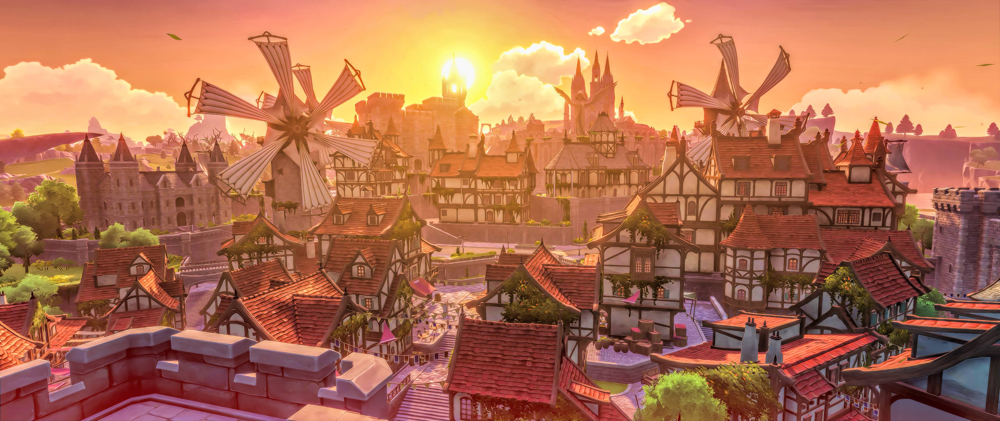
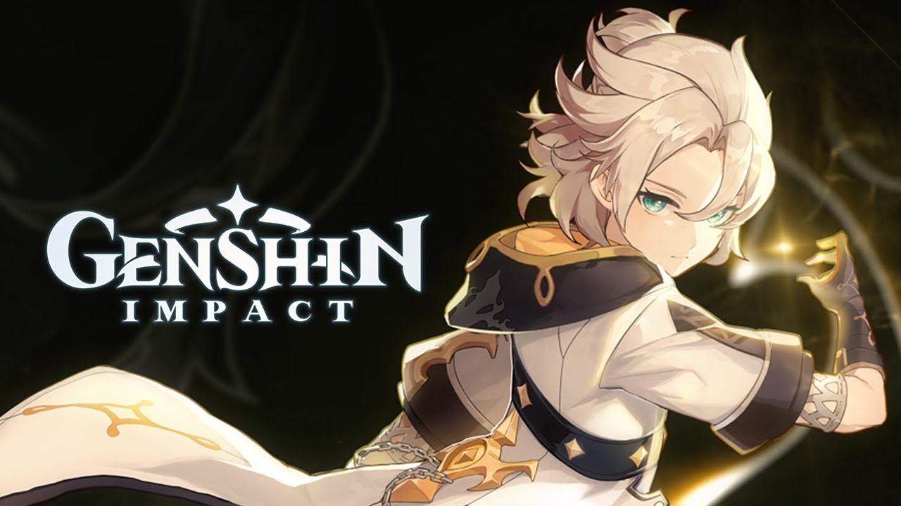

Mondstats Characters
Mondstadt was the first region available to us, and is home to the Knights of Favonius!

Jean
As the Acting Grand Master of the Knights, Jean has always been devoted to her duties and maintaining peace in Mondstadt.
She had taken precautions long before the onset of Stormterror's assault, and she will guard Mondstadt with her life as always.
Amber
A perky, straightforward girl, who is also the only Outrider of the Knights of Favonius.
Her amazing mastery of the glider has made her a three-time winner of the Gliding Championship in Mondstadt.
As a rising star within the Knights of Favonius, Amber is always ready for any challenging tasks.
Lisa
She is an intellectual witch who can never get enough naps.
As the Librarian of the Knights of Favonius, Lisa is smart in that she always knows exactly what to do with whatever troubles her.
As much as she loves her sleep, she still manages to keep everything under control in a calm, composed manner.

Kaeya
In the Knights of Favonius, Kaeya is the most trusted aide for the Acting Grand Master Jean.
You can always count on him to solve any intractable problems.
Everyone in Mondstadt loves Kaeya, but no one knows what secrets this witty, charming knight has...
Barbara
The Deaconess of the Favonius Church and a shining starlet adored by all.
Although the concept of a starlet is rather novel in a city of bards, the people of Mondstadt love Barbara nonetheless.
"I owe everything to the city's spirit of freedom" — Barbara, regarding her popularity.
Diluc
As the wealthiest gentleman in Mondstadt, the ever-dapper Diluc always presents himself as the epitome of perfection.
But behind the courteous visage burns a zealous soul that has sworn to protect Mondstadt at all costs, allowing him to mercilessly vanquish all who threaten his city.
Razor
Some say he is an orphan raised by wolves.
Others say he is a wolf spirit in human form.
He is most at home in the wild, fighting with claw and thunder.
To this day the wolf boy can be found prowling the forest, where he and his wolf pack hunt to survive using nothing more than their animal instincts.

Venti
A bard that seems to have arrived on some unknown wind — sometimes sings songs as old as the hills, and other times sings poems fresh and new.
Likes apples and lively places but is not a fan of cheese or anything sticky.
When using his Anemo power to control the wind, it often appears as feathers, as he's fond of that which appears light and breezy.
Klee
Knights of Favonius Spark Knight! Forever with a bang and a flash!
—And then disappearing from the stern gaze of Acting Grand Master Jean.
Sure, time in solitary confinement gives lots of time to think about new gunpowder formulas...
But it'd still be better to not be in solitary in the first place.

Bennett
One of the few young adventurers of the Mondstadt Adventurers' Guild, he is always plagued with inexplicable bad luck.
He is the only active member of his own adventure group, known as "Benny's Adventure Team," after all the other members decided to "take leave" following a series of unfortunate incidents.
As a result, the team is currently on the verge of being dissolved.
Being unable to break the poor boy's heart, Katheryne of the Adventurers' Guild has kept "Benny's Adventure Team" on the books, whilst also hiding from him the fact that all the other members have long since officially left the team.
Noelle
Like most of Mondstadt's young people, Noelle always dreamed of being a knight of Favonius when she grew up.
She may not have what it takes to be a knight just yet, but she is learning.
Working as a maid at the Knights' headquarters, she is constantly taking notes on what constitutes knightly speech, knightly conduct, and knightly customs.
She holds firm to her belief that one day she will join their ranks — she just needs to keep trying her hardest at everything she does.
Fischl
A mysterious girl who calls herself "Prinzessin der Verurteilung" and travels with a night raven named Oz.
Currently serves as an investigator in the Adventurers' Guild.
Through her unique abilities, eccentric character, and (while she would never admit it herself) hard work, Fischl has become a rising star among the Adventurers' Guild's investigators, earning the recognition of all.
Sucrose
An alchemist with an insatiable curiosity towards the world and everything in it.
Attached to the Knights of Favonius as an assistant to Albedo, her area of focus is "bio-alchemy."
She strives to enrich the world by transforming living things with the power of alchemy.
Granted, the products of her research sometimes prove to be more weird than wonderful — but on the whole, she has made monumental contributions to the field of bio-alchemy.
Mona
A mysterious young astrologer who proclaims herself to be "Astrologist Mona Megistus," and who possesses abilities to match the title.
Erudite, but prideful.
Though she is often strapped for cash and lives a life of thrift, she is resolved to never use astrology for profit... It is this very resolution that has caused her to constantly fret about money.
Diona
The incredibly popular bartender of the Cat's Tail tavern, rising star of Mondstadt's wine industry, and the greatest challenger to its traditional powerhouses.
A feisty feline young lady from Springvale, any drink mixed by Diona's hand tastes delicious beyond belief.
Yet given her extreme distaste for alcohol, is her talent a blessing or a curse?
Albedo
Albedo — an alchemist based in Mondstadt, in the service of the Knights of Favonius.
"Genius," "Kreideprinz," or "Captain of the Investigation Team"... Such titles and honors are of no consequence to him when there is so much more research to conduct.
The pursuit of fortune and connections cannot hold a candle to his heart's desire — acquiring the limitless, obscure knowledge left behind by previous generations of scholars.

Rosaria
Rosaria, a sister in Mondstadt's Church of Favonius.
A sister of the church, though you wouldn't know it if it weren't for her attire.
An unusual woman with sharp, piercing words and a cold manner.
Her movements are unpredictable. She often leaves without notifying anyone.
She acts with some kind of purpose, but others don't seem to know exactly what she stands for...
Eula
A rebellious descendant of the old aristocracy who is always out on the battlefield.
As one born into the old aristocracy, carrying the bloodline of sinners, Eula has needed a unique approach to the world to navigate the towering walls of prejudice peacefully.
Of course, this did not prevent her from severing ties with her clan.
As the outstanding Spindrift Knight, she hunts down Mondstadt's enemies in the wild to exact her unique "vengeance."
Aloy
An outcast since birth, Aloy grew up in a harsh mountain wilderness near the tribe that shunned her.
Fostered by an expert hunter, she trained to hunt with cat-like grace and deadly accuracy – but the things she most wanted to learn, he could not teach her.
Most of all, she burned to know the circumstances of her birth – who her parents were, and why she was shunned by the tribe.
Her quest for answers swept her into a wider and more dangerous world than she ever could have imagined.
She encountered strange and powerful new tribes, ancient ruins rife with mysteries, and dangerous enemies, both human and machine.
Eventually she learned that her origins and destiny were deeply tied to the fate of the world itself, and fought an epic battle to save it against the evil forces of an artificial intelligence from the ancient past.
She thought that this would be the end of her journey. But there is always more to an adventurer's tale.
She has now come to Teyvat in search of a new challenges.
In this brave new world, Aloy is ready for the hunt!